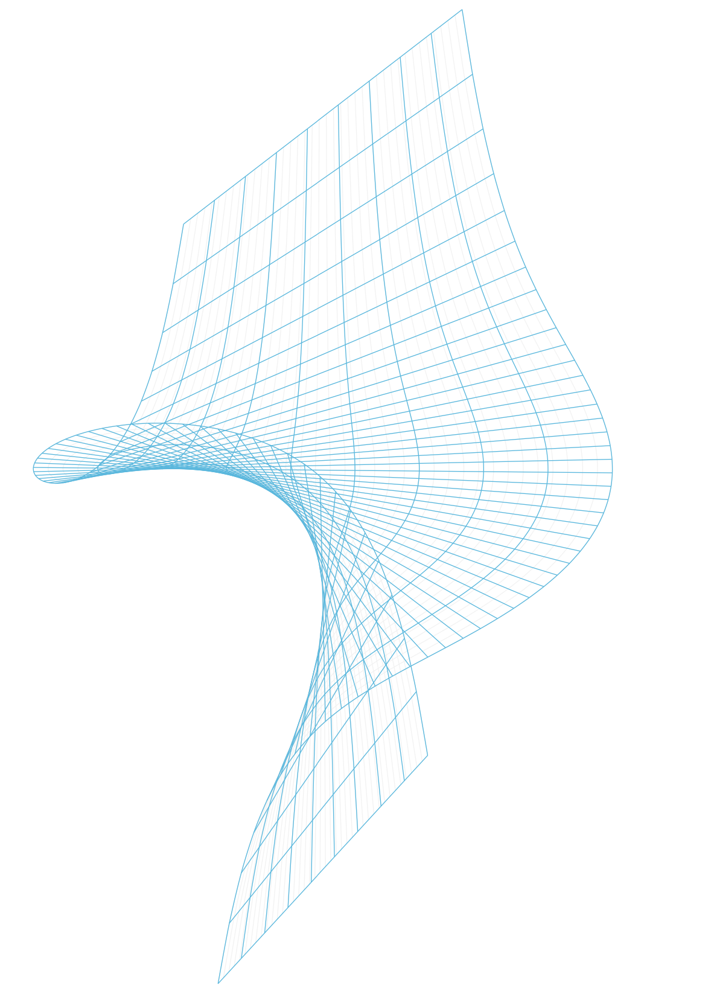

Welcome to Tikz-Python!

Tikz-Python is intended to be an easy-to-use, no-nonsense python package meant to serve as an interface to TikZ code. With Tikz-Python, you can have your beautiful vector graphics and eat it too! (erh, maybe).
Install it below as follows:
Want to see some nice examples of what this package can do? See here.
Usage
Suppose we want to create a sphere. We can achieve this as follows.
from tikzpy import TikzPicture
tikz = TikzPicture() # Initialize empty canvas
tikz.circle((0, 0), 3, options="thin, fill=orange!15")
# Draw two arcs to give 3d-illusion
tikz.arc((3, 0), 0, 180, x_radius=3, y_radius=1.5, options="dashed")
tikz.arc((-3, 0), 180, 360, x_radius=3, y_radius=1.5)
tikz.show() # Displays a pdf of the drawing to the user
Why Tikz-Python
With Tikz-Python, you generate TikZ code by writing python code. And Python is much nicer than TeX.
-
Instead of spending a lot of time tediously writing messy, unreadable TikZ code to generate your desired figure, you can use TikZ-Python to quickly create your figure as a Python script. Your Python code will definitely be much more modular and extensible than the raw TikZ code you'd end up writing.
-
At any time, you can compile and look at your figure in a sandbox environment by calling
TikzPicture.show() -
With a sandbox environment for compilation, compiling will be faster versus you editing and re-compiling your tikz code directly in whatever 100-page document you're working in.
-
Once you're happy with your drawing, you can copy the generated TikZ code and paste it into your LaTeX document. Or, you can save your code to a file by calling
TikzPicture.write(file_destination).
Additionally, Tikz-Python encodes lines, circles, rectangles, etc. as data structures. These data structures have useful properties and methods that can be used to create other drawings.
For example, suppose I want to create a line and two labels at the ends. The code below achieves this
from tikzpy import TikzPicture
tikz = TikzPicture()
line = tikz.line((0, 0), (1, 1), options="thick, blue, o-o")
start_node = tikz.node(line.start, options="below", text="Start!")
end_node = tikz.node(line.end, options="above", text="End!")
tikz.show() # Displays a pdf of the drawing to the user
line allows us to pass in line.start and line.end into the node positions, so we don't have to type out the exact coordinates.
This is great, because it makes our code more modular and therefore easier to change. With TikZ alone, you'd need to type out exact coordinates, and update every single one each time you make a minor adjustment to your code.
If we were working in an interactive python shell with the code above, we would be able to see that these functions return classes with useful attributes:
Additionally, you canprint your tikz object to see the code generated
>>> print(tikz)
\begin{tikzpicture}
\draw[thick, blue, o-o] (0, 0) to (1, 1);
\node[below] at (0, 0) { Start! };
\node[above] at (1, 1) { End! };
\end{tikzpicture}
Background
TikZ is a wrapper of the TeX-based graphics package PGF (see here), and it is commonly used in LaTeX documents to produce beautiful graphics. However, the power of TikZ comes with a tradeoff: it is extremely tedious to use, learn, understand, and iterate on.
The main problem with Tikz is that even though Tikz is very powerful, it is often the case that nonexperts who use TikZ end up producing subpar images. The reason for this is because of the fact that in order to create beautiful images with TikZ, you also need to deeply understand LaTeX, TeX, PGF, and the history, bugs, cryptic error messages, and ridiculous quirks (and there are many quirks) of these languages. This takes years of practice and for the average person this is not realistic or desirable.
This can be seen in research papers; even in high quality research papers, the graphics are usually not that great and it totally makes sense why. It's probably because the authors are too busy being an expert in their own field of work to sit down and read a 1300 page manual on TikZ.
About
I started this project after realizing
-
most TikZ code is repetitive.
-
TikZ was designed smart; it has an inherent object oriented pattern in its usage which we can exploit and automate.
-
I really hate writing TeX and TikZ code.
I wrote the first version of this as a math undergraduate while writing a large set of notes. As a heavy user of LaTeX, TikZ, PGF, I knew how to design the project to enable efficient development of TikZ code. Then I became a professional software engineer, and I refactored the code to a modern python package while maintaining the original desired goals of the package.